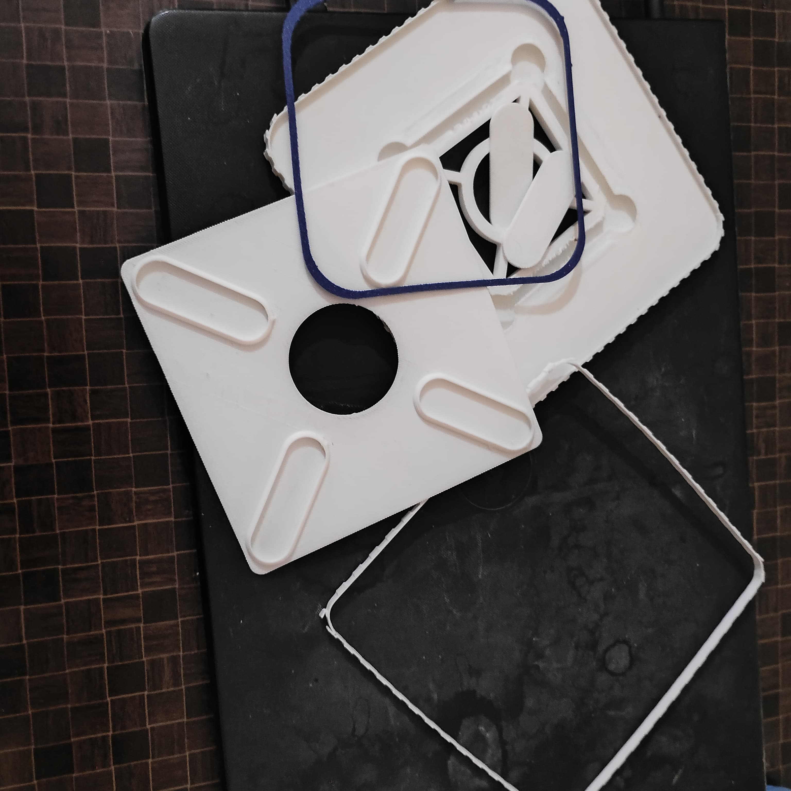

Where I'm at
Not a straight line. If you looked at my browser history from the last ten years, you'd think a few different people shared the same laptop.
Taking things apart at every fair
My hometown had two big fairs every year. I always wanted a remote-control car. The fun part started after I got bored of driving it — sitting on the floor with a sharpener blade, taking it apart just to see what was inside.
I didn't own a screwdriver. The sharpener blade became one.
Some cars went back together fine. Some didn't. My parents eventually stopped buying them, so I started saving my own pocket money to buy — and open — them myself.
A brake light nobody asked for
I just thought my bicycle should have one. I hid the battery under the seat, hid the wires, and used the brake pads as the switch. It wasn't neat. But it worked.
Burning a motor just to see
Someone mentioned dynamos — small generators old bikes used to have. I'd never seen one, so a friend showed me the next best thing: spin a toy motor fast enough, and an LED lights up. We rigged one to my wheel and rode until the motor burned out. So I opened it and rewired it, just to see if it would work again.
Nobody teaches you electricity like electricity does.
Not every idea was a good one — a few LED strips came off parked trucks, and once I wired a 12V LED straight into a wall socket. It exploded. Lesson learned either way.
A broken phone changed my direction
My phone's power button stopped working, so I opened that too — but it needed soldering I didn't have. A repair shop fixed it, and I left thinking more about learning to solder than about the phone. That phone became my classroom after that: editing photos and videos, basic Linux commands, tutorials I didn't fully get but kept trying anyway.
Two very different degrees
Mechanical Engineering wasn't planned — it was just the seat I got. It taught me how gears, shafts, and bearings actually work, and how to file metal flat. Later I moved to Computer Science: Python, HTML, C++, basic machine learning. In between, I found Arduino — mostly confusion at first, code copied from YouTube that sometimes worked and sometimes didn't.
Building the things I wanted as a kid
I finally bought my own soldering iron instead of paying someone else to do it. Comfortable with electronics by then, I built the remote-control car I'd wanted since I was a kid — this time designed myself, controlled from my phone over Bluetooth. Then I connected my home's lights and fan to a small board, so I could turn them on from my phone. Nobody asked for it. I just wanted to know if I could.
AI became another tool on the desk
Instead of hours searching old forums, I could ask questions, debug code, and learn new topics faster. The browser didn't disappear. Neither did YouTube. This just became one more place I learn from.
3D printing, one problem at a time
My first prints weren't good — failed supports, wrong sizes, cracked parts. I spent more time calibrating than printing. Learning to design my own parts brought back the CAD I'd learned in diploma, except now I could hold the result a few hours later. The layer lines bothered me, so I learned sanding, then resin, then silicone molds — each fix led to the next thing to learn.

That's turned into real products lately, not just projects — a lamp made from PLA, and a diffuser combining wood and 3D-printed parts. Neither was perfect. Both taught me more than another weekend of tutorials would have.

A day job, and everything else
Delivery work paid the bills at first. Documentation work pays them now. It's stable, but after enough repetition, I did what I always do — started trying to automate the boring parts of it.
At the time, none of this felt connected. Now it looks like it was pointing the same way all along.
A lot of things never became anything — ideas that stayed ideas, prints sitting in a box, code that never left my laptop. Lately I'm trying to finish more of what I start.
This isn't finished. I just wanted to write down how I got here so far.